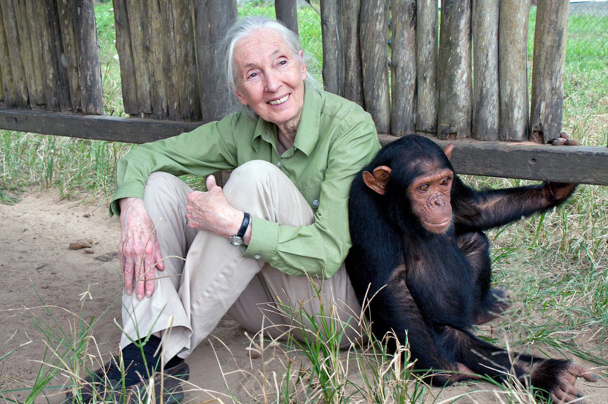

Research pioneer and protector of chimpanzees in the wild

Here is a timeline of Jane Goodall's life.
1934 - Valerie Jane Morris-Goodall, known as Jane Goodall, was born on April 3, 1934 in London, England.
1941 - Inspired by The Story of Dr. Doolittle, she dreamt of going to Africa to study animals one day.
1952 - She got a job as a typist at Oxford University. She later worked for a film studio.
1956 - An opportunity that changed her life. She was invited by a friend to visit their family farm in Kenya, Africa.
1957 - At age 23, Jane set foot in Africa. In Kenya she met a famous anthropologist, Dr. Louis Leakey, who eventually hired her to be his secretary at the Coryndon Museum (now the National Museum of Kenya) in Nairobi. Recognising her talent, he decided she was the right person to take on a study of chimps in the Gombe Stream Reserve in Tanzania. When Jane returned to England, Dr. Leakey began raising funds for the project.
1960 - Jane, accompanied by her mother, set up camp at the Gombe Stream Reserve in Tanzania. Jane spent hours every day observing the chimpanzees, noting down their dietary habits and food-gathering ingenuity. In November, her mother returned to England.
1962 - With Dr. Leakey's help, Jane was accepted into a programme at Cambridge University. After her first term, Jane headed back to Africa. This time, she met Baron Hugo van Lawick, a photographer/filmmaker from the National Geographic magazine. She was his assignment - he took pictures of her while she worked.
1964 - On March 28, 1964 Jane and Hugo wedded. They returned to Gombe to continue researching chimps.
1966 - She graduated from Cambridge and became professionally known as Dr. Jane Goodall.
1967 - In March of 1967, Jane gave birth to her son, Hugo. They nicknamed him "Grub."
1974 - Jane and Hugo divorced. This same year, Jane observed that chimps waged war on other groups of chimps, and even carried out cannibalism.
1975 - Jane met Derek Bryceson, the head of the Tanzanian National Park, and married him. Unfortunately, soon after the wedding, Derek died of cancer.
1977 to present - Jane founded the Jane Goodall Institute to help people understand the importance of preserving the forests and the animals who lived in them. Over the years several programs have developed to help others realise that they, too, can make a difference in the world around them.
Read more about the amazing Dr. Goodall on Wikipedia.